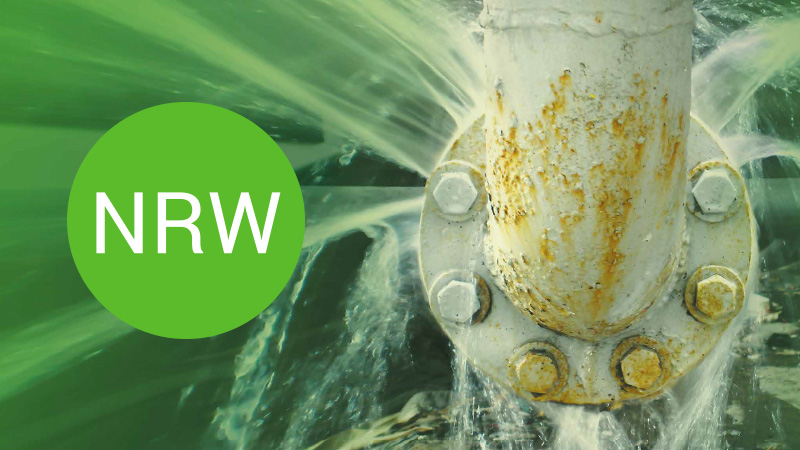

<!-- <header>
    <h1>About Non-Revenue Water (NRW)</h1>
</header> -->
<!-- <nav>
        <a href="#what-is-nrw">What is NRW?</a>
        <a href="#importance">Importance</a>
        <a href="#causes">Causes</a>
        <a href="#solutions">Solutions</a>
        <a href="#impact">Impact</a>
        <a href="#case-studies">Case Studies</a>
        <a href="#contact">Contact</a>
    </nav> -->
<div class="container">
    <div class="content">
        <h2 id="what-is-nrw">What is Non-Revenue Water (NRW)?</h2>
        <p>Non-Revenue Water (NRW) refers to water that has been produced and is lost before it reaches the
            customer. It includes physical losses (through leaks, bursts) and commercial losses (through theft,
            metering inaccuracies).</p>

        <div class="image-container">
            
        </div>

        <h2 id="importance">Importance of Addressing NRW</h2>
        <p>Reducing NRW is crucial for improving the efficiency of water utilities, saving costs, and ensuring a
            reliable supply of water. High levels of NRW indicate significant water loss, which can strain resources
            and financial sustainability.</p>

        <h2 id="causes">Causes of NRW</h2>
        <ul>
            <li>Leaking pipes and infrastructure</li>
            <li>Illegal connections and water theft</li>
            <li>Metering inaccuracies</li>
            <li>Operational inefficiencies</li>
        </ul>

        <h2 id="solutions">Solutions to Reduce NRW</h2>
        <ul>
            <li>Regular maintenance and upgrade of infrastructure</li>
            <li>Implementation of advanced metering systems</li>
            <li>Active leakage control programs</li>
            <li>Improved billing and collection systems</li>
        </ul>

        <h2 id="impact">Impact of NRW</h2>
        <p>NRW has several impacts on water utilities and the community:</p>
        <ul>
            <li>Financial Loss: Significant revenue is lost due to water that is produced but not billed.</li>
            <li>Resource Wastage: Precious water resources are wasted, exacerbating water scarcity issues.</li>
            <li>Operational Efficiency: High levels of NRW indicate inefficiencies in the water distribution system.
            </li>
            <li>Service Quality: Reduced water availability can affect the quality and reliability of water supply
                services.</li>
        </ul>

        <!-- <div class="case-studies">
                    <h2 id="case-studies">Case Studies</h2>
                    <p>Several successful projects have demonstrated the effectiveness of NRW reduction measures:</p>
                    <h3>Case Study 1: City X</h3>
                    <p>In City X, an extensive leak detection and repair program reduced NRW by 20% within two years, saving millions of dollars in revenue.</p>
                    <h3>Case Study 2: City Y</h3>
                    <p>City Y implemented an advanced metering infrastructure (AMI) system, which improved billing accuracy and reduced commercial losses by 15%.</p>
                    <h3>Case Study 3: City Z</h3>
                    <p>Through community engagement and public awareness campaigns, City Z reduced illegal connections by 30%, significantly decreasing NRW.</p>
                </div> -->

        <div class="contact-form" id="contact">
            <h2>Contact Us</h2>
            <p>If you have any questions or would like to learn more about how to reduce NRW, please contact us
                using the form below:</p>
            <form>
                <label for="name">Name:</label>
                <input type="text" id="name" name="name" required>

                <label for="email">Email:</label>
                <input type="email" id="email" name="email" required>

                <label for="message">Message:</label>
                <textarea id="message" name="message" rows="4" required></textarea>

                <button type="submit">Submit</button>
            </form>
        </div>
    </div>
</div>
<!-- <footer>
        <p>&copy; 2024 NRW Solutions. All rights reserved.</p>
    </footer> -->